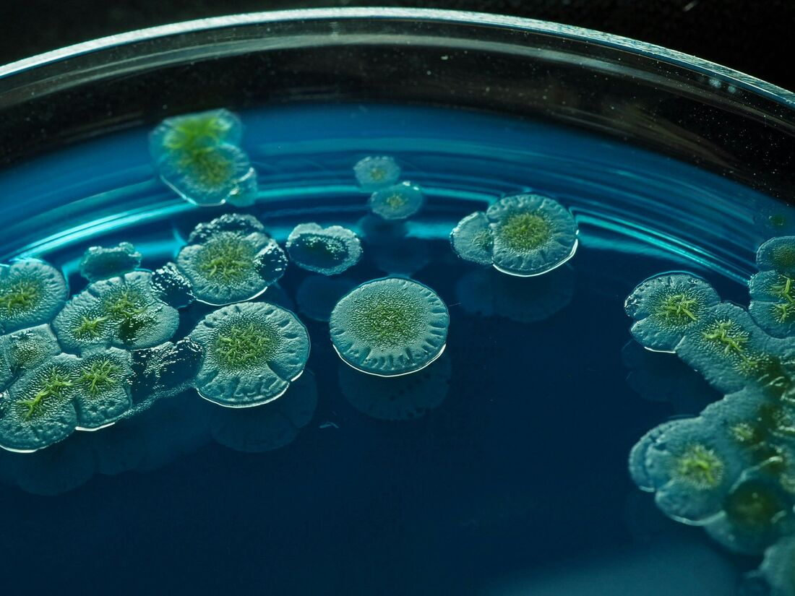

9 materialer
Biologi
Celle, enzym, makromolekyler, genetik og hormonel regulering — bygget til at blive skruet på undervejs.
7 simuleringer
1 forløb
1 spil
Interaktive simuleringer til biologi og naturgeografi. Kør dem på tavlen, eller lad eleverne gå i gang selv.

CellerSpring direkte ned i det, timen handler om.
Celle, enzym, makromolekyler, genetik og hormonel regulering — bygget til at blive skruet på undervejs.
Klima, tryk, hav og jord — simuleringer, forsøgsvejledninger og opgaver med facit.
Det er dem, siden handler om. Alle kører i browseren uden login — sæt dem på tavlen, eller giv eleverne linket.
Skru på koncentrationen, og se cellen svulme eller skrumpe.
Byg kulhydrater, proteiner og fedt af de rigtige byggesten.
Find optimum — og se enzymet denaturere, når det bliver for varmt.
Følg nedbrydningen over tid, og aflæs jodprøven undervejs.
Fire hormoner over 28 dage — flyt ægløsningen, og se kurverne følge med.
Saml nukleotider til en streng, og byg den komplementære side selv.
Byg mRNA ud fra DNA-skabelonen — base for base gennem genet.
Sollys ind, varme ud — og hvad gasserne gør ved regnskabet.
Albedo, tilbagestråling og feedbacks lagt oven på grundmodellen.
Send luftpakken over bjerget, og se præcis hvor regnen falder.
Køl luften ned til dugpunktet, og se kondensationen sætte i gang.
Land/hav-brise, Sibirien og monsun — hvor blæser vinden hen?
Skru på albedo og drivhusgasser, og se overfladetemperaturen indstille sig.
Temperatur og saltholdighed driver den termohaline cirkulation — eller slår den fra.
Ler, silt, sand og grus — hvor bliver regnvandet af nede i jorden?
Vejledninger, opgaver og spil ligger i hver sin stak — så du altid ved, hvad du åbner.
Trin for trin med udstyrsliste, sikkerhed og forventet resultat.
Feltforsøg med jordprøver, målskema og databehandling.
Regn på luftpakken over bjerget: temperatur, kondensation og nedbør.
Samlet forløb om arv og miljø med tekster, øvelser og oplæg.
Byg en celle op fra bunden — mutationer, udvælgelse og lidt held.
Byg sæt med begreber, og træn dem som flashcards, quiz eller matchspil.
EksamenHold tiden ved mundtlig eksamen — forberedelse, prøve og votering.
PlanlægningKalender med overblik over årets arbejdstid, 2026/27.
RegistreringHold styr på timerne — opgaver, historik og rapporter.
KlassenTræk elever tilfældigt, og fordel dem i grupper.
OverblikBiologi C som netværk — se hvordan emnerne hænger sammen.